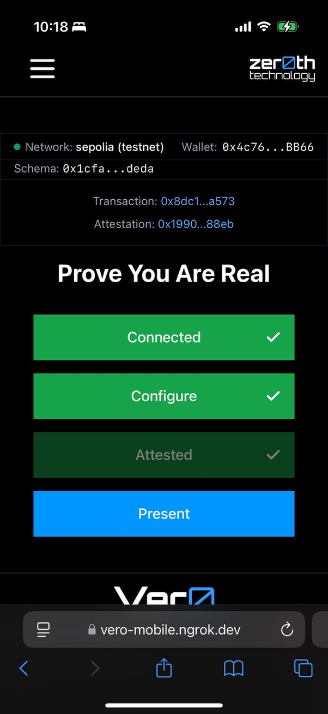
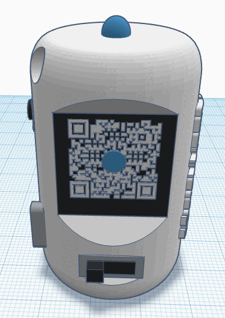
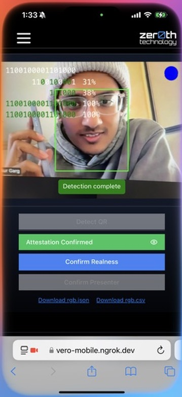

Vero: Authenticating Live Video Streams



In an era where deep fake technology threatens the authenticity of live video streams, the Vero offers a novel solution for real-time video authentication. Vero embeds cryptographic messages directly into the physical environment being recorded, these messages can be used to authenticate that the person you are interacting with is exactly who they claim to be.
The Challenge
As deep fake technology advances, there's an increasing need to verify both the identity of presenters and the real-time nature of content in live video streams. Live deep fakes, created by applying sophisticated real-time filters, can convincingly map an actor's movements onto a target, making it challenging to distinguish authentic from generated content.
Current methods rely mostly on using complex, sophisticated algorithms to detect generative video. These can be computationally intensive and expensive to implement - most rely on routing your video feed through a third party service. And these only tell you that the video is fake, they don't tell you who is in the video.
Other methods rely on proprietary hardware that must be used to capture the video and generate a secure watermark. While this can be very effective in some scenarios, it is not practical for wide scale use
Vero's Approach
Vero embeds identity information into the physical environment being recorded. This identity information is cryptographically signed and can be used to verify that the person you are interacting with is exactly who they claim to be. It becomes part of the raw video stream and part of the permanent record (if you choose to keep it).
Here's how it works:
- Obtain a unique identifier (UID) from Ethereum Attestation Services (EAS), which includes encrypted message information and is signed using your identity solution of choice.
- Broadcast this UID by converting a portion of it to a binary string and blinking that message out using a red, green, or blue light source which is reflected off of your face and into the camera.
- Enabling viewers to decode the message and match it to the attestation through pixel analysis.
This approach makes real-time video feed modification extremely difficult because:
- The cryptographic message is embedded in the physical environment itself
- Uses an unpredictable pattern of light that is mapped onto the presenter's face
- The message is cryptographically signed by the presenter using the private key from their identity solution.
Key Components
Users interact with Vero in different ways depending on if they are presenting or verifying.
- Presenting: To present using Vero requires a light source and a method to pass a link to the UID through the video feed. We have two approaches to this:
- A physical device that can be connected to a computer and passes the message out using LEDs and an embedded screen
- A mobile app approach that utilizes the hardware in your mobile device
- Verifying: To detect, decode, and verify a message the viewer has several options:
- A browser extension that can be utilized when viewing a stream (i.e., taking a Zoom call in your browser)
- A mobile app that allows the user to use the camera in their mobile device to detect a message in a video on another screen
- Teleconference platform specific plugins that can detect a message within the teleconference application (i.e., taking a Zoom call in the Zoom app)
Each of these approaches have their own unique advantages and disadvantages, and the right choice depends on the specific use case.
Design Principles
Vero is designed to be a simple and easy to use system that is secure and reliable. We consider Vero to be a public good, and as such have stuck to an open-source and decentralized design ethos.
- Zero-Trust: Everything required to verify the video is embedded into the video stream, and can be done by the verifier from scratch.
- Decentralized: There is no central authority or trusted third party to trust. The presenter has the option of several networks where the attestation can be stored, most of which are public blockchains.
- Bring Your Own Identity: There are minimal requirements of the identity solution used, this is purposely designed to allow different identity approaches for different use cases.
- Cryptographically Secure: We rely on the nearly impossible odds of guessing a 20 bit hexadecimal number derived from a cryptographically created unique identifier.
- Do-It-Yourself: The hardware components are readily available and we provide the option for anyone to build a Vero device themselves.
>
Implementation and Results
The Vero has been tested under various conditions, being able to consistently produce 100% matches (or multiple 80%+ matches in a row). Factors affecting performance include ambient light, blink rate, quality of web/mobile device camera, and the quality of video stream.
Key findings include:
- Brightness of the light source is the most important factor in detection
- Ambient lighting affects detection, with stable, slightly lower light levels performing best.
- Blink rates should be at least 2x the frame rate of the video to provide redundance in detection
Future Enhancements
Vero's current state is just the beginning, we plan to leverage this concept to include several additional "proof of human" features in the future.
- Inclusion of biometrics and proof of location
- Multi-party set-ups for secure sessions
- Embedded verification into existing video conferencing applications
- Reputation and trust metrics
- Pseudo-random signatures derived from the video feed after verification
- Continuous updates to stay ahead of deep fake technology advancements
Conclusion
Vero presents a promising approach to live-streaming video authentication in the age of deep fakes. By embedding cryptographic messages directly into the physical environment, Vero provides a robust method for verifying both presenter identity and content contemporaneousness. As deep fake technology advances, systems like Vero will play a crucial role in maintaining trust in digital communications.